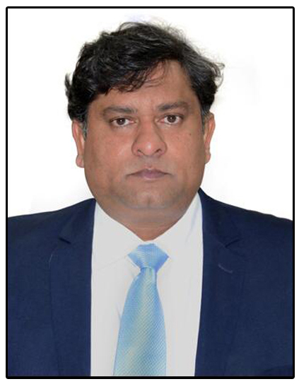

Sri. Rahul Bojja , I.A.S
Vice Chancellor I/c for RGUKT Basar
Secretary & Commissioner
Schedule Caste Development Department
Govt. of Telangana
Email
: vc@rgukt.ac.in
VC's Peshi
Name
: Ms. Shirisha
Phone
: +91 9703760686
Email
: secytovc@rgukt.ac.in